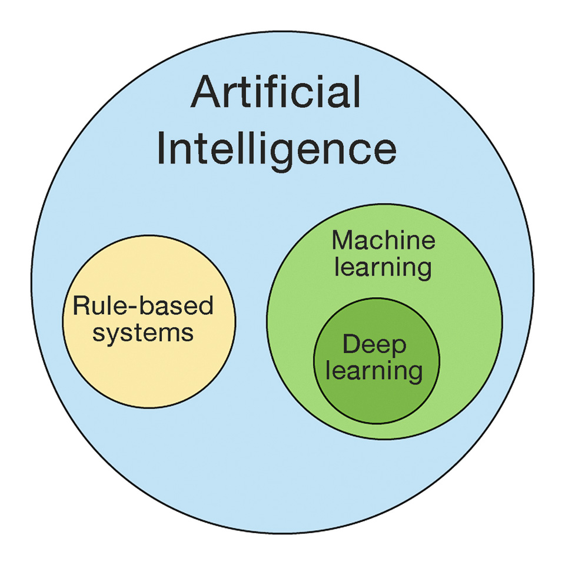
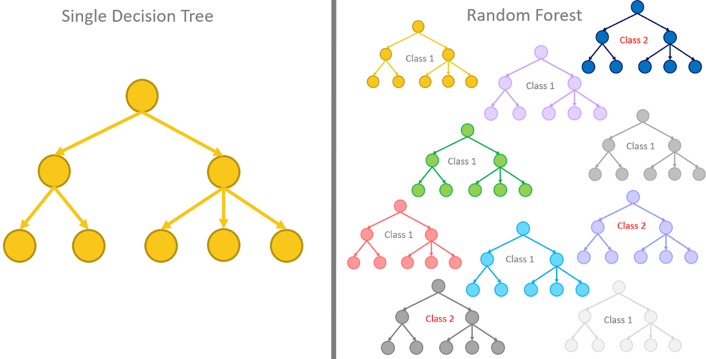
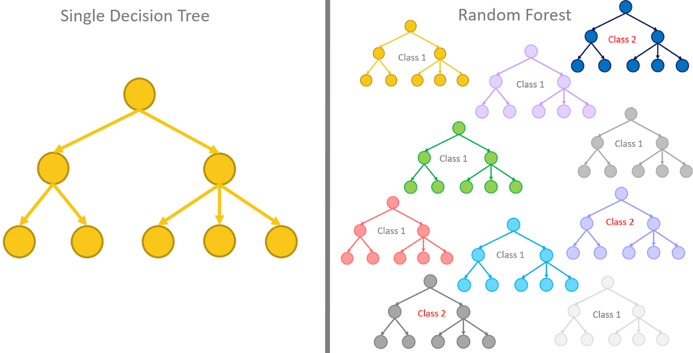

[06] Veiledet og ikke-veiledet læring

Solveig Bjørkholt <solveig.bjorkholt@stv.uio.no>
Hva betyr “læring”?
- Maskinen forstår mønstre og sammenhenger selv
- Skiller seg fra regelbasert framgangsmåte


Kan automatisere prosesser
Kan hjelpe mennesker i beslutningsprosesser 
Veiledet læring
- Vi har et utvalg eposter som vi vet er spam/legit.
- Maskinen bruker denne informasjonen for å klassifisere nye eposter som spam/legit.
Ikke-veiledet læring

- Vi har en mengde besøkende til en blogg med litt informasjon om alder, kjønn, etc.
- Maskinen bruker denne informasjonen til å finne grupper som likner hverandre.
Veiledet læring
Brukes når vi har data der vi allerede vet Y for et sett
av data.
\(Y = \alpha + \beta_1X_1 + \beta_2X_2 + e\)
Hvis målenivå er kategorisk: Klassifisering
Hvis målenivå er kontinuerlig: Regresjon
Klassifisering er mest vanlig i tekst
Y kalles da også for “label” (merkelapp / “klasse”)

Eksempel for i dag

$politikk_D = + _1person + _2bil + _3hus + _4forventning … $
## Rows: 5,631
## Columns: 9
## $ id <dbl> 21, 1, 7, 47, 55, 16, 64, 71, 3, 66, 86, 54, 92, 94, 93,~
## $ title <chr> "Meet the founder of the blog revolution", "Averting the~
## $ summary <chr> "The founding mother of the blog revolution, Movable Typ~
## $ transcript <chr> "Over the past couple of days, as I've been preparing fo~
## $ topics <list> [<tbl_df[8 x 2]>], [<tbl_df[9 x 2]>], [<tbl_df[8 x 2]>]~
## $ duration <dbl> 992, 957, 1266, 1126, 1524, 1394, 1212, 1248, 1105, 1151~
## $ likes <chr> "17K", "110K", "60K", "80K", "14K", "364K", "42K", "128K~
## $ recorded_date <date> 2006-02-23, 2006-02-25, 2006-02-24, 2005-07-14, 2006-02~
## $ speakers <list> [<tbl_df[1 x 2]>], [<tbl_df[1 x 2]>], [<tbl_df[1 x 2]>]~Steg 2: Trene modell for å klassifisere de resterende dokumentene
2.1 Splitter datasettet inn i et treningssett, et testsett og et valideringssett.
- Treningssett: De dataene modellen bruker for å lære mønstre og sammenhenger.
- Valideringssett: Del av data som modellen sjekker at den har lært godt mot.
- Testsett: Endelig data som brukes for å sjekke at modellen er god nok.


Hvorfor splitter vi opp i så mange sett?
Fordi vi må
sjekke at modellen gjør det godt nok på out-of-sample data (data som
ikke har blitt brukt for å beregne modellen).

2.2 Preprosesserer teksten

I pensum nevner de disse modellene for klassifikasjon:
- Support vector machine (SVM)
- Logistisk regresjon
- Random forest

 



Ikke-veiledet læring
Brukes når vi har data der vi ikke vet Y.

Takk for i dag!